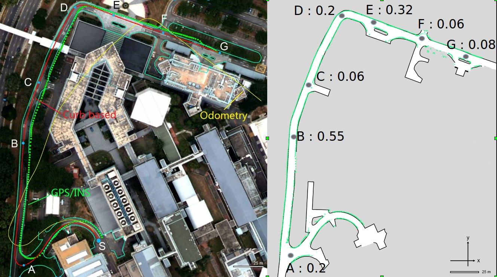

Autonomy for Mobility on Demand Systems
Vehicle localization is an important component for autonomous driving. The popular use of GPS signals to get good localization upto lane accuracy fails often in urban areas due to lack of satellite views and multi-path readings. A direct application of such location estimate could lead to dangerous driving decisions. Recent approaches to improve localization stems from building 3-D point cloud based maps utilizing expensive 3-D LIDARs which cost more than the car itself.Our approach is to use a single tilted down 2-D LIDAR to develop a synthetic 3-D sensor by aggregating scans in spatial and temporal dimensions. By exploiting existing road network information and augmenting it with prior occupancy map built by the synthetic sensor, we are able to localize our vehicle quite accurately using only the 2-D LIDAR in runtime.
Using road-side curbs
One of the most prominent features on an urban road is the curb, which defines the boundary of a road surface. An intersection is a junction of two or more roads, appearing where no curb exists. The combination of curb and intersection features and their idiosyncrasies carry significant information about the urban road network that can be exploited to improve a vehicle’s localization.
| Curb based localization performed on the NUS campus roads with the help of available road map available a-priori. Our approach is robust to temporary occlusion created due to passing vehicles (~3s). The blue boxes are curb points extracted from laser readings in real time. Points not detected as curbs are shown as pink boxes. The red particles are pose hypothesis from the MCL algorithm. Note that along long stretches of the road the particles elongate while upon detection of intersection features (~49s, green boxes) the estimate is improved significantly. |
We create a synthetic LIDAR and develop a measurement model for the curb-intersection features. Under the MCL framework, above road observation is fused with odometry information, which is able to yield precise localization. We implement the system using a single tilted 2D LIDAR on our autonomous test bed and show robust performance in the presence of occlusion from other vehicles and pedestrians.
|  |
| Results of our curb based localization. The vehicle was stopped manually at groud truth positions(A-G) and the estimated values recorded. The location estimate as well as ground truth values were tagged to an arbitrary point in the map. The values of the error are in meters and they show how well the vehicle is able to localize. The estimate errors are larger when there are no intersection features (e.g, at B) while they recover fast when new intersection features are available (e.g, at C). |
Relevant Publications
- B. Qin, Z. J. Chong, T. Bandyopadhyay , M. H. Ang Jr.,
E. Frazzoli and D. Rus, Curb-Intersection Feature Based Monte
Carlo Localization on Urban Roads, IEEE International Conference
on Robotics and Automation, ICRA-2012.
[PDF]